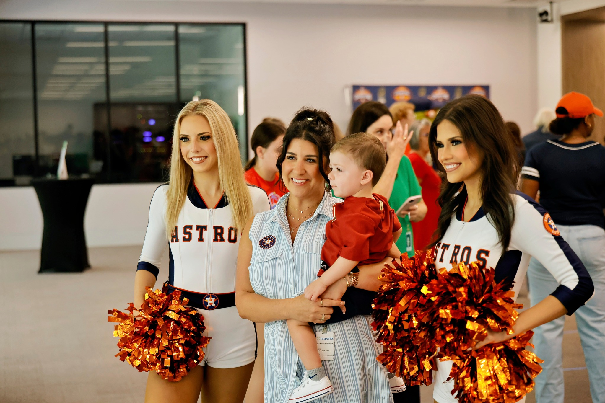

Board Oversight
Independent board provides strategic direction and reviews financial reports.

Alaska Native Veterans Council is organized and operated exclusively for charitable purposes under Internal Revenue Code 501(c)(3). EIN: 10035722. Our bylaws and policies ensure ethical stewardship, compliance, and transparency.
Independent board provides strategic direction and reviews financial reports.
We publish scopes, eligibility, outcomes, and audited statements when applicable.

Training and governance education support continuous improvement.